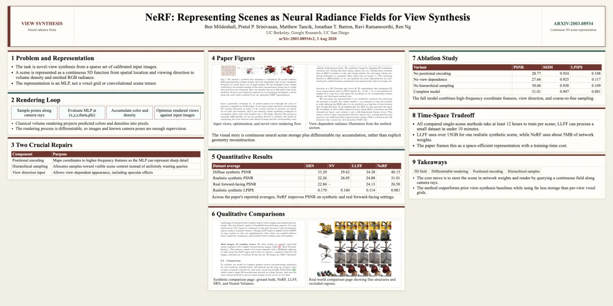

Meta-harness optimization / 2026
AutoDesign
A research system for improving the harness that turns source material into faithful, editable artifacts.
From one paper to a complete research communication suite: an editable poster, presentation slides, a research webpage, and a narrated conference video with synchronized subtitles.
Enter the engineNext / the optimization object
System state PosterHarness / observable / editable
The optimization object
Improve the system that makes the artifact.
Each rollout leaves more than a poster. It leaves source context, an executable artifact, render evidence, diagnostic traces, and a bounded candidate update to the reusable harness.
Accepted transition Evaluate the output. Repair one module. Retain the next system state.
Poster universe / AutoPosterBench
One harness.
Many research worlds.
Paper communication suite / research generalization
One paper.
A complete communication suite.
AutoDesign's validated PosterHarness produces source-grounded academic posters through autonomous optimization and human-guided refinement. We further study how the same meta-harness optimization framework generalizes to slides, research webpages, and narrated videos.
PaperPoster · Slides · Web · Narrated Video

LongCat-NextEditable HTML poster
01 / Paper to poster
A source-grounded poster that remains editable.
LongCat-Next is rendered as a dense academic poster with paper figures, benchmark evidence, and native HTML text for continued revision.
- Use
- Conference presentation
- Artifact
- Editable HTML poster
- Status
- Validated PosterHarness output

12 slidesEditable deck
02 / Paper to slides
A research narrative, paced across twelve editable frames.
LongCat-Next is reorganized into a presentation sequence with paper figures, benchmark evidence, and a consistent visual grammar.
- Use
- Conference talk
- Artifact
- HTML, PDF, and PPTX
- Status
- Exploratory meta-harness generalization
ResponsiveExecutable HTML
03 / Paper to web
An editorial research page built for reading, not just viewing.
LongCat-Next becomes a responsive long-form artifact with grounded figures, quantitative evidence, and verified project links.
- Use
- Research dissemination
- Artifact
- Responsive HTML and CSS
- Status
- Exploratory meta-harness generalization
6 minutesConference video
04 / Paper to video
A conference talk that moves from method to evidence.
The DDPM conference video combines generated narration, synchronized subtitles, paper figures, and evaluation results in a timed visual sequence.
- Use
- Narrated conference presentation
- Artifact
- 1920 × 1080 H.264 video
- Status
- Exploratory meta-harness generalization
Representative optimization trace
The artifact changes once.
The harness keeps learning.
AutoDesign reads the evidence left by completed rollouts, finds failures that repeat, and turns them into bounded updates to the system behind future artifacts.
State 00Observed

Recurring signal
Weak hierarchy · uneven evidence · underfilled regionsRepresentative sequence reconstructed from the AutoDesign workflow and artifact traces. It explains the mechanism; reported benchmark results appear below.
Inside PosterHarness
A design system the model can operate.
PosterHarness is the poster-specific system optimized by AutoDesign. It grounds the Designer in the paper, executes an editable artifact, inspects the browser result, and routes localized repair.
Designer → render → evaluate → localized repair
Evaluation separation Training evidence → candidate update → independent development gate → 100-paper final benchmark
01 / Context & Memory
Ground the design before composition begins.
- Input
- Output
Compact method record
Evidence follows the harness.
PosterHarness is AutoDesign’s validated instantiation for academic posters. The artifact remains inspectable while system-level evidence accumulates across rollouts.
AutoPosterBench / reported evidence
Measured across source grounding, communication quality, and executable artifact reliability.
Three independent views
Harness benefit, final quality, and human preference.
01 / Harness transfer · 10-paper controlled subset
One PosterHarness, seven fixed configurations.
Every evaluated configuration improves when the optimized PosterHarness is attached.
02 / Final quality
AutoPosterBench
- 01 AutoDesign77.55
- 02 Claude Design70.68
- 03 OpenDesign69.15
100-paper AutoPosterBench main track · selected systems among 14 evaluated configurations.
03 / Blind human evaluation
- 11
- reviewers
- 55.2–77.8
- 95% confidence interval
- 67.6%
- tie-adjusted vs. Claude Design
Next research boundary Generalize the learned harness update beyond posters without overstating evidence from the validated poster domain.
Research resources